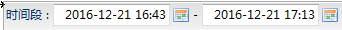

刷新
刷新
从数据库监控面板中的数据库列表的操作下拉菜单中点击SQL分析可以打开SQL分析面板，该页面用于查看最近一段时间内数据库实例执行的sql语句。如下图所示:
功能按钮列表
| 按钮 | 说明 |
|---|---|
| 刷新 |
刷新列表信息。 |
|
|
关键字查找过滤。 |
|  | 执行时间过滤。 |
| 类别过滤。分为慢sql、高频sql、错误sql。慢sql的界定时间可以在系统配置面板调整。 |
SQL语句信息列表
列表中为当前收集到的最新的表空间监控信息。sql语句超长表格中会隐藏超长部分，如果想查看完整的sql信息或者想拷贝sql语句可以双击行数据打开SQL详细信息对话框。
| 字段 | 说明 |
|---|---|
| SQL语句 | sql语句内容。 |
| 执行时间 | sql执行时间。 |
| 耗时 | 执行花费的时间。 |
| 会话ID | 所属会话ID。 |
| 会话IP | 所属会话的ip地址。 |
| 用户名 | 执行sql的用户。 |
| 应用名称 | 执行sql语句的应用程序名称。 |